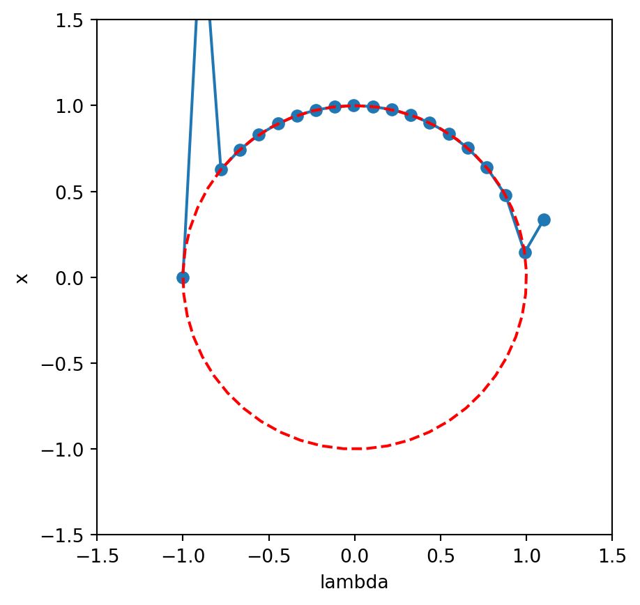
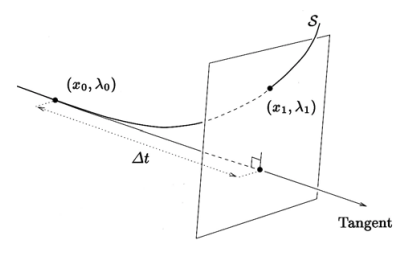

This material has not yet been finalised and is still under construction. Once it is covered in lectures, this banner will be replaced.
The general problem we seek to solve involves the following. Consider a vector-valued equation given by the general form \[
\mathbf{F}(\mathbf{x}, \lambda) = \begin{pmatrix}
F_1(\mathbf{x}, \lambda) \\
F_2(\mathbf{x}, \lambda) \\
\vdots \\
F_m(\mathbf{x}, \lambda)
\end{pmatrix} = 0.
\tag{16.1}\]
Here, \(\mathbf{x} = (x_1, x_2, \ldots, x_n)\), is a list of \(n\) unknowns, and hence we have \(m\) equations. The parameter, \(\lambda\), is a given quantity. For each given value of \(\lambda\), our goal is to solve for the unknown \(\mathbf{x}\).
The set of points \((\mathbf{x}, \lambda)\) that satisfy Equation 16.1, otherwise called the locus can be plotted in the space \((\mathbf{x}, \lambda)\). Doing so, we call the result a bifurcation diagram.
Example of a parametric continuation problem
Consider \(\lambda \in \mathbb{R}\) and \(x\) determined via the equation \[
F(x, \lambda) = x^2 + \lambda^2 - 1 = 0.
\]
The above is the equation of a unit circle in the \((x, \lambda)\)-plane. Thus, we know that for \(\lambda \in (-1, 1)\), there are two solutions in \(x\), of which both branches merge at \(\lambda = \pm 1\). For \(|\lambda| > 1\), there are no solutions.
Therefore, the bifurcation diagram for the above problem is the unit circle in the \((x, \lambda)\)-plane.
As you can imagine, the above problem Equation 16.1 is an incredibly general problem in mathematics and science. Virtually all problems can be posed, at least in some approximate way, as the solution of \(F(\mathbf{x}, \lambda) = 0\), or via an analogous equation.
It is possible to extend the theory to multi-dimensional parameters, say \(\mathbf{\lambda} = (\lambda_1, \lambda_2, \ldots)\) but for simplicity we assume there is only one parameter.
16.1 Parameter continuation
Our task is to investigate numerical procedures where we can solve problems like Equation 16.1 and generate the set of solutions, as illustrated in a bifurcation diagram.
The basic idea is to start with an initial guess, say \((\mathbf{x}^*, \lambda^*)\). We can apply Newton’s method and solve Equation 16.1 in order to determine a point on the solution curve, say \((\mathbf{x}_0, \lambda_0\).
Next, we increment \(\lambda\), say to \(\lambda_1 = \lambda_0 + \Delta \lambda\). Starting from the previous solution, \(\mathbf{x}_0\), we then attempt to converge to the correct solution \((\mathbf{x}_1, \lambda_1)\).
This involves the following pseudocode:
Poor person’s numerical continuation
1. Input guess (x, lambda), f, df
a. Call Newton's method via Newton(f, df, x, lambda)
b. Obtain a preliminary solution (x0, lambda0)
2. Increment lambda1 = lambda0 + delta
a. Call Newton's method via Newton(f, df, x0, lambda1)
b. Obtain a new solution (x1, lambda1)
3. Repeat 2 until we have established enough values of lambda
Unfortunately this does not work as well as we would like. We can try it on the above circle example. In this case, notice that \[
\begin{align}
F(x, \lambda) &= x^2 + \lambda^2 - 1, \\
F_x(x, \lambda) &= 2x.
\end{align}
\]
import numpy as npimport matplotlib.pyplot as pltdef Newton(f, df, x, maxiter=100, tol=1e-12, display=0): i =0while (abs(f(x) -0) > tol) and (i < maxiter): err = f(x) x = x - err / df(x)if display ==1:print("f(x) = ", np.abs(err), ", x = ", x) i = i +1return x, errlammat = np.linspace(-1, 1.1, 20)xmat =0*lammatx =0.1for i, lam inenumerate(lammat): f =lambda x: x**2+ lam**2-1 df =lambda x: 2*x x, err = Newton(f, df, x, 10, 1e-8, 0)if err >1e-4:print("Careful no convergence at lambda = ", lam) xmat[i] = x# Plotsplt.plot(lammat, xmat, '-o');# Plotting a circletheta = np.linspace(0, 2*np.pi, 50)plt.plot(np.sin(theta), np.cos(theta), 'r--');plt.xlabel('lambda');plt.ylabel('x');plt.xlim([-1.5,1.5])plt.ylim([-1.5,1.5])plt.gca().set_aspect('equal')plt.show()
Careful no convergence at lambda = -0.8894736842105263
Careful no convergence at lambda = -0.6684210526315789
Careful no convergence at lambda = 1.1

You’ll notice that there are several problems.
First, there seems to be an issue for several points in \(\lambda\) where the previous guess does not seem adequate to obtain the next solution.
Second, our numerical scheme cannot resolve past fold points, here at \((1, 0)\).
Of course, we can re-do a secondary numerical calculation to resolve the lower branch of the locus. However, it would be preferable to be able to do this in a single run. Moreover, in more complicated problems, we may not know what the final locus ressembles, and it may furthermore lie in a high-dimensional space.
16.2 Pseudo-arclength continuation
There is nothing geometrically wrong about continuation past a fold point; our previous numerical difficulties are instead related to the fact that \(\lambda\) is a poor choice of parameter used to describe the solution curve, \((\mathbf{x}, \lambda)\).
Instead, it makes much more sense to consider an alternative parameter, such as the arclength along the curve. Let \(t\) denote the parameter along the curve (we will specify momentarily what it is). Then we are considering the computation of the arc \((\mathbf{x}, \lambda) = (\mathbf{x}(t), \lambda(t))\), which corresponds to points in \(\mathbb{R}^{n+1}\) specified by a scalar value of \(t\).
In addition, we can calculate a tangent vector along this arc, given by the \((N+1)\)-component vector, \[
(\dot{\mathbf{x}}, \, \dot{\lambda}) = \left( \frac{\mathrm{d}\mathbf{x}}{\mathrm{d}t}, \, \frac{\mathrm{d}\lambda}{\mathrm{d}t}\right).
\]
In order to allow for continuation past a fold, we apply an idea called pseudo-arclength continuation. Assume that at some initial point, \(t = t_0\), we possess a solution \(P = (\mathbf{x}_0, \lambda_0)\) and its tangent \(\mathbf{\tau}_0 = (\dot{\mathbf{x}}_0, \dot{\lambda})\). We are seeking a new value, say \((\mathbf{x}_1, \lambda_1)\), at \(t = t_1\).
In order to find this new value, we construct a plane perpendicular to the vector \(\mathbf{\tau}_0\), which passes through the point \(Q = (\mathbf{x}_1, \lambda_1)\). This is shown in the diagram below.

Figure 16.1: Diagram from (Spence and Graham 1999). Note that in the diagram, they use \(\Delta t\) for the distance between the point and the plane; we use \(\Delta s\).
The illustrated plane lies a distance \(\Delta s\) from the point P. From planar geometry, the distance of a point, \(P\), from a plane with point \(Q\) and normal direction \(\mathbf{\tau}_0\) is given by \[
\frac{\mathbf{\tau}_0}{||\mathbf{\tau}_0||} \cdot \mathbf{v} = \Delta s
\] where \(\mathbf{v}\) is the vector from \(Q\) to \(P\). Putting in the values then gives \[
-\frac{(\dot{\mathbf{x}}_0, \dot{\lambda_0})}{||(\dot{\mathbf{x}}_0, \dot{\lambda_0})||}
\cdot (\mathbf{x}_0 - \mathbf{x}, \lambda_0 - \lambda) = \Delta s.
\]
In other words, we are seeking to solve the coupled set of equations \[
\begin{cases}
\mathbf{F}(\mathbf{x}, \lambda) = 0 \\
\frac{(\dot{\mathbf{x}}_0, \dot{\lambda_0})}{||(\dot{\mathbf{x}}_0, \dot{\lambda_0})||}
\cdot (\mathbf{x} - \mathbf{x}_0, \lambda - \lambda_0) - \Delta s = 0
\end{cases}
\tag{16.2}\]
Notice that we seem to have the right number of equations to unknowns. There are \((N+1)\) unknowns in \((\mathbf{x}, \lambda)\). The equation for \(\mathbf{F} = 0\) gives \(N\) equations, while the last (scalar) equation closes the system. The step \(\Delta s\) is specified by the implementation.
16.3 Secant continuation
We require a method for approximating the initial tangent direction, \((\dot{\mathbf{x}}_0, \lambda_0)\), and then we need to update this direction as the continuation proceeds. To do this, we approximate the derivative with a secant. Suppose we have two nearby solution points, \[
\mathbf{v}_0 = \begin{pmatrix}
\mathbf{x}_0 \\
\lambda_0
\end{pmatrix}
\quad \text{and} \quad
\mathbf{v}_1 = \begin{pmatrix}
\mathbf{x}_1 \\
\lambda_1
\end{pmatrix}.
\] We can approximate the derivative using the secant line \[
\mathbf{s} = \frac{\mathbf{v}_1 - \mathbf{v}_0}{||\mathbf{v_1} - \mathbf{v_0}||}.
\]
This line has unit magnitude and is approximately aligned with \(\tau_0\).
Pseudocode for pseudo-arclength continuation using the secant
1. Input guess (x, lambda), f, df, initial step size, ds
a. Call Newton's method via Newton(f, df, x, lambda)
b. Obtain a preliminary solution (x0, lambda0)
2. Increment lambda1 = lambda0 + delta
a. Call Newton's method via Newton(f, df, x0, lambda1)
b. Obtain a new solution (x1, lambda1)
3. While lambda < desired_max
a. Form the secant line, S, using v0 and v1
b. The new solution is approximately at v = v1 + S*ds
c. Solve the extended Newton system
d. Assign v0 = v1, v1 = new solution, v. Go back to a.
Krauskopf, Bernd, Hinke M Osinga, and Jorge Galán-Vioque. 2007. Numerical Continuation Methods for Dynamical Systems. Vol. 2. Springer.
Spence, Alastair, and Ivan G Graham. 1999. “Numerical Methods for Bifurcation Problems.” In The Graduate Student’s Guide to Numerical Analysis’ 98, 177–216. Springer.